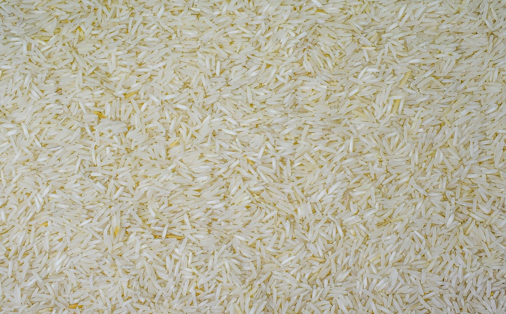

Rice

Description
Rice cookers are great and all but they also cost money and as someone who very much likes having money I currently don't own a rice cooker. Due to this I have developed a revolutinary rice making technology that I call "using a pot". If you too wish to not use a rice cooker to make good rice this recipe will give an extremely vague guide on how to probably do so.
Ingredients
- Basmati Rice(or other rice of choice, be warned that cooking time and amount of water may vary)
- Water, roughly 1.5x the amount of rice you have chosen to use
- 1 tbsp Butter, not necessary but I like it
Steps
- Measure out your rice and water, make sure to account for the fact that the rice when cooked will increase in volume quite drastically
- Place your rice in a sieve fine enough that none of it falls through and wash it for a few seconds, many will disagree on washing or the duration but know that I am always correct and this is objectively the best way
- Add both rice and water to a pot of appropriate size, the combined rice and water should not reach more than about halfway up the pot
- Place your hob on medium heat and add your butter on top of the water
- While you wait for the water to begin boiling gently stir the rice every few minutes as the butter melts and mixes in
- Once the water has begun boiling or simmering if you're impatient: do a final stir, drop the temperature to the minimum your hob will allow and set a timer for 10 minutes
- After your timer has finished turn off the hob and your rice will be done, it is better to leave it for 10 minutes to further cook but you can eat it right away as well
Home